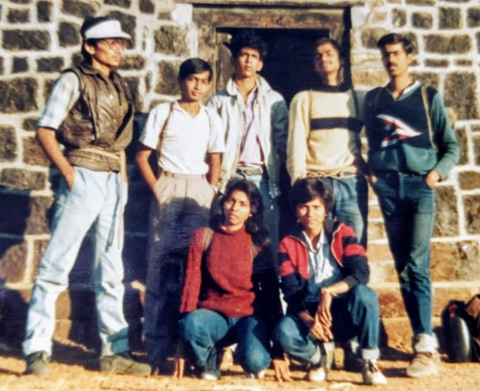

डोळे टक्कं उघडे होते...कोपर्यात लावलेली मेणबत्ती फडफडत होती..त्या प्रकाशात भिंतीवर अनेक आकार नाचत होते..हालत होते..!वारा बाहेर चांगलाच भणाणत होता...या वातावरणात भर म्हणून की काय दाराबाहेर बसलेल्या कुत्र्याचे बेसूर रडणे गूढता अजूनच वाढवत होते..!वेळ जाता जात नव्हता अन् पापणी मिटायला तयार नव्हती..!ह्या कुशीवरून त्या कुशीवर......कधी संपणार ही रात्र?बेचैन अस्वस्थ मन! किती वाजले असतील? 'धाप ..धाप..'अचानक लाकडी दरवाज्यावर जोरजोरात थापा...!!कोण? या वेळी ? इथे..? भीतीची अनामिक शिरशिरी आत आतपर्य॔त पोहोचली..!!
बहुतेक MBBS च्या दुसर्या वर्षातली गोष्ट असावी..काॅलेज आणि होस्टेल दोन्हीकडे हळूहळू settle झालो होतो..पहिल्या वर्षाचा अवघड कालावधी यशस्वीपणे पार पडला होता..भीड आता चांगलीच चेपली होती आणि ट्रेकींगचं भूत मानगुटीवर बसलं होतं....गृप जमवायचा आणि शुक्रवारपासूनच एस टी पकडून गडकिल्ले पालथे घालायचे ह्याची नशा चढायला लागली होती..!कुणीतरी राजगड किल्ल्याच्या ट्रेकची idea मांडली आणि उत्स्फूर्तपणे ती अंमलात आणायचा plan ही तयार झाला.फक्त राजगडच करूया असं ठरलं..काही अनुभवी आणि बरेचसे आमच्यासारखे नवशे-गावशे ,असे सर्वच एका वेगळ्याच ऊर्जेने भारले गेलो..!मजल दरमजल करीत निसर्गाचा आनंद घेत राजगडला बर्यापैकी वेळेतच पोहोचलो.गतवैभवाच्या खूणा शोधत राजस राजगड मनात साठवून घेत होतो...सुवेळा माची,संजीवनी माची खूप उत्साहाने सर करून झाल्या..!बालेकिल्ल्यातून सभोवार नजर फिरवली अन् मनोमन शिवाजी महाराजांना त्रिवार वंदन केले...ऊर अभिमानाने भरून आला...ज्याठिकाणी आपण उभे आहोत तिथेच कधीतरी महाराजांचा पदस्पर्श झाला असणार ह्या नुसत्या जाणिवेनेच मन थरारून गेले..!! न कळत ती पावन झालेली माती मस्तकी गेली आणि धन्य धन्य वाटले..!!
राजगडावरचा मुक्काम संपत आला होता...गृपमध्ये आता सरळसरळ दोन भाग पडले होते...काहीजणांना हातासरशी आलोच आहोत तर राजगड -तोरणा हा ट्रेक करायचा होता तर काहीजण माघारी फिरण्याच्या तयारीत होते..पुढील दीड दिवसांसाठी शिधा पुरण्यासारखा आहे का ह्याचा अदमास घेतला..गरमागरम पोहे करून घेतले..थोडे खाल्ले आणि बाकीचे तोरण्यावर लागतील म्हणून बांधून घेतले...हो नाही करता करता तोरण्याच्या दिशेने कूच केले...दुपार उलटून गेली होती आणि आता आमची सूर्याशीच शर्यत सुरू झाली होती...!अंधार पडायच्या आत तोरणा सर करायचा ह्या आवेशात सगळेच न बोलता नुसते भराभरा चालत होते..!राजगडापासून आमच्या सोबत असलेल्या एका कुत्र्यानेही बरोबर यायचं ठरवलं अन् आता तोच आमचा वाटाड्या बनला होता..!!
सावल्या लांब लांब होत आता जरा अंधार पडायला होता....तोरण्याला चढण्यासाठी लावलेला लोखंडी उभा जिना असा दृष्टीक्षेपात आहे म्हणेपर्य॔त फारच अंधुक दिसायला लागला...जवळ पोहोचेपर्य॔त मिट्ट काळोख दाटून आला...कसेबसे एकमेकांना धीर देत मिणमिणत्या टाॅर्च च्या प्रकाशात तोरणा चढाईची लढाई सुरू झाली होती..!धडपडत ,खरचटत वर पोहोचता पोहोचता टाॅर्चने हे राम म्हटलेआणि डोळ्यांनी पूर्णपणे माघार घेतली होती..!कसेबसे अंदाजाने आणि कुत्र्याच्या आधाराने गडावरचे मंदिर कुठे दिसते का म्हणून चालायला सुरूवात केली....डोळे हळूहळू अंधाराला सरावले होते तेवढ्यात ...'धप्प.'.! दगड पडल्यासारखे वाटले पण "अरे अरे!पडशील "म्हणेपर्य॔त एकजण भुईसपाट झाला होता..!जीवाच्या आकांताने त्याला वरती खेचले...रिकाम्या मोठ्ठ्या कुंडात पडतापडता वाचला होता गडी..!! अरे बापरे!!पण आत्ता तर खरी सुरूवात होती..!आज चंद्र ही दिसत नव्हता आकाशात कुठे...अमावस्या होती का? कौणालाच सांगता येईना..!दूरवर थोडासा प्रकाश चमकल्यासारखे वाटले आणि आम्ही जपून त्या दिशेने चालायला सुरूवात केली...पोटात प्रचंड कावळे ओरडत होते ..पाणी पण संपत आलं होतं.."पोरांनु कशापाई इतकं रातच्याला गडावर निघालासी..?"रस्त्यात भेटलेल्या कातकर्याचं ऐकलंअसतं तर बर झालं असतं असं आता मनापासून वाटायला लागलं होतं..!एकूणच त्या वातावरणामुळे मनावर भीतीचं सावट पसरत होतं..!शेवटी एकदाचे मंदिर सापडले...खालच्या गावात राहणारा पुजारी बहुधा संध्याकाळी दिवा लावून गेला असावा...त्याचाच थोडाफार उजेड पडला होता...जाड कडीचं लाकडी दार ढकलून आत गेलो..छोटंसच मंदिर होतं..मधोमध मूर्ती होती आणि दिवा तेवत होता..
हुश्श!!सगळ्यांनी सॅक खाली टाकून फतकली मारल्या.डोक्यावर छप्पर मिळाल्याने थोडा जीवात जीव आला होता..थोडं चहापुरती सामान होतं..कुंडातून आणलेलं पाणी रूमालाने गाळून घेतलं अन् श्वास न घेता पाणी पिण्याची कसरत शिकून घेतली..!सोबत आणलेले पण आता वास लागलेले पोहे तसेच चहाच्या घुटक्यात संपविले..!ज्या ट्रेकमध्ये सर्वात जास्त हाल तो लई भारी ट्रेक असा फालतू समज करून घेतल्रामुळे पोहे सहज पचून गेले..!दिवसभराच्या श्रमामुळे एकेक जण आता आडवा होऊ लागला होता.आमच्यातले अनुभवी ट्रेकर्स मात्र झोपतांना करायच्या सुरक्षेची आखणी करीत होते..मुली मध्ये आणि सर्व बाजूंनी मुलांनी झोपायचे असे ठरले.बरोबरच्या मुलींची जबाबदारी सर्वस्वी आपलीच आहे असा समज असल्याने अशावेळी मुलांना जास्तच चेव येतो..!असतील नसतील ती शस्त्रे म्हणजे दोन काठ्या ,एक साधा चाकू आणि 2-3 दगड मोक्याच्या ठिकाणी ठेवत सर्व मोर्चेबांधणी झाली.शून्य मिनिटातच काही जणांची गाडी घाट चढायला पण लागली..
मी मात्र मनात असंख्य विचार घोळवत निद्रादेवीची आळवणी करीत होते...अंधारातल्या सावल्या आणि भयाण घोंगावणारा वारा त्या गूढ वातावरणाय अजूनच अनामिक भीती पसरवत होता...अचानक कुत्र्याचा ओरडण्याचा आवाज वाढला आणि.."धाप्प्...!"दरवाज्यावर थाप पडली...!
दुसर्या क्षणी सर्वजण उठून बसले..हातात काठ्या दगड घेवून सावधपणे दरवाज्याच्या मागे जाऊन उभे राहिले...कोण आहे? इतक्या रात्री गडावर कोण आलं असेल?कातकरी भिल्ल की चोर की अजून काही?प्रत्येकाच्या चेहेर्यावर भीती दिसत होती...कानोसा घेतला.."कोण..?"पुन्हा थाप..!"दार उघडा..!"एक घोगरा आवाज आत घुसला..सारेच सावध..दरवाजा हळूच ढककला...
दुसर्याच क्षणी समोरची व्यक्ती तीरासारखी आत घुसली...जोराने सॅक आदळण्याचा आवाज आला..बघतो तर काय..सरळ मूर्तीलाच टेकून पाय पसरून त्या व्यक्तिने बाटली काढून घट् घट् प्यायला सुरूवात सुध्दा केली.!!मेणबत्तीच्या प्रकाशात कंबरेला लावलेला जांबिया मात्र क्षणात तळपला..!प्रत्येकजण दोन पावले मागे!! पाचेक मिनिटं अशी आजमावण्यातच गेली..पिता पिता तोही आजूबाजूला न्याहाळत होता..आम्ही सारे चिडीचूप!!थोडं बोलायचा प्रयत्न केला पण महाशय मनःस्थितीतच नव्हते..जांबिया काढून डोक्याजवळ ठेवून त्याने स्वतःला जागा केली आणि आडवा झाला .अचानक आणि अनपेक्षित घडलेल्या या घटनेमुळे सर्वच जण स्तंभित..!काहीही न बोलता प्रत्येक जण विचारात मग्न..!त्या दिशेला जरा हालचाल झाली की हात आपसूकच काठी आणि दगडाकडे जात होते..तोही बहुधा झोपला नसावा..कारण अस्वस्थ चुळबूळ तिकडूनही कानी पडत होती..अंधार नको नको झाला होता..थोडा डोळा लागला असं वाटेपर्य॔त पुन्हा दचकून जाग येत होती..हा खेळ कितीवेळ चालू होता आठवत नाही पण कधी एकदा पहाट होते असं मात्र मनोमन वाटत होतं..मेणबत्ती कधीच विझून गेली होती..तसेच पाय पोटाशी घेऊन कोपर्याचा कानोसा घेत नुसते पडून राहिलो...मुलं पाळीपाळीने उठून बसत होते आणि पहारा देत होते...आगंतूक पाहुण्याची भिती कुणालाही झोपू देत नव्हती...!!
वार्याचा जोर आता मंदावला होता..पक्ष्यांचे आवाज यायला लागले होते..गार वार्याची झुळूक बारीकश्या फटीतून आत येत होती...थोडंस॔ फटफटलं असावं..आणि अचानक दूरवरून बासरीचे सूर कानी पडले...अरे वा!शाम वाजवतोय !ते सूर इतके स्वर्गीय या आधी कधीच जाणवले नव्हते..!!म्हणजे पहाट झालीय तर..!आम्ही हळूहळू बाहेर येवून बसलो..निःशब्द..! फक्त सूर कानात साठवीत होतो अन् रात्रीच्या आठवणींना मनातून हुसकावत होतो..!
सिगेरेट शिलगावत तो आगंतूक पाहुणाही थोड्या वेळाने बाहेर आला..जीन्स टीशर्ट घातलेला साधारणपणे आमच्याच वयाचा असणारा हा काॅलेजवीर मि त्राशी पैज लावून रात्रीतनं एकटा गड चढून आला होता..रस्त्यात लुटू पाहणार्या कातकर्यांशी मारामार्याही करेन आला होता...चार ठिकाणी कुंडात पडता पडता वाचला होता...!!दारू पिऊन देखील आम्हा सर्वांच्या भितीने रात्रभर तोही जागाच होता...!!!! स्वच्छ प्रकाशात एकमेकांना बघितल्यावर आपली भिती किती अनाठायी होती हे ज्याला त्याला कळून चुकले होते..हा त्या रात्रीच्या गूढ वातावरणाचा प्रभाव होता का?की गावकर्यांनी सांगितलेल्या भूत पिशाच्याच्या
गोष्टींचा पगडा म्हणायचा..??जे काय असेल ते पण मनाची कल्पनाशक्ती सारासार विचारांचा हात सोडून आपल्याला एका वेगळ्याच विश्वात घेऊन जाते....जे अस्तित्वातच नसतं तेच अवतीभवती पिंगा घालताहेत असा भ्रम तयार होतो...आणि मग सुरू होतो एक विलक्षण अनुभव...!!!!!